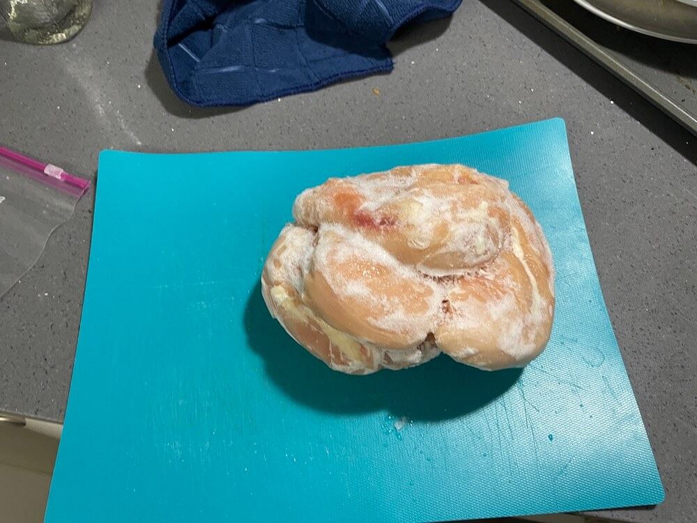
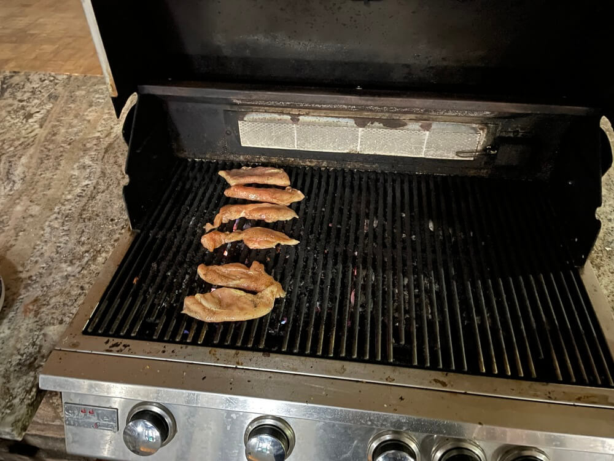

Cooking Chicken
Written by Taylor Porter - 11/21/2024
Cooking raw chicken for the first time can be a bit scary. For me, it was a step away from the world of boxed mac and cheese and ramen and a step into the world of cooking. There's a lot to think of when it comes to raw meat, so hopefully this article will give you the confidence you need to be a chicken champion!
Defrosting
One thing I have learned is that you need to plan your meals ahead of time, so you can give frozen meat the time to defrost. When I took my chicken out of the freezer, it was rock solid, so separating it was a bit of a challenge. My roommate suggested that I separate my chicken after I buy it, which definitely comes in handy. I put the chicken I was using in the fridge overnight, and the next day, it was nice and thawed.
Food Safety
Touching raw chicken is an experience. I wasn’t used to the weird, slimy texture, and I didn’t want it on my hands. It’s important to remember to wash your hands after touching raw meat, so you don’t spread bacteria. My roommate also taught me not to wash chicken because it spreads pathogens and bacteria everywhere. You also need to avoid cross-contamination by using separate dishware for raw meat and other foods and thoroughly washing anything that comes into contact with raw meat. Handling raw meat for the first time was scary, but I got through it with no food poisoning! If you take extra care to prepare your food safely, you should be good to go.
Cooking
Before I cooked the chicken, I cut it in half vertically to get a thinner cutlet that cooks through easier. I seasoned my chicken with salt, pepper, and garlic, getting that nice flavor. Luckily, my apartment has some grills, so I headed outside and slapped on my chicken. I let it sit until the bottom had some nice grill marks, and flipped it over. If you have a food thermometer, use that to check the thickest part of the chicken. If it reads 165 or over, then you're good to go! Otherwise, just cook it until you can easily cut through the chicken with a knife.
Results
Overall, I would say the chicken turned out pretty well! The first time I cooked chicken,I was a bit worried about whether or not I overcooked or undercooked it, but luckily my roommate said it was thoroughly done. Because of that, the chicken was a bit tough, but the flavors went together well. This time I didn't overcook it, and got some juicer slices. You should definitely give this a try. Even though it might be intimidating, you will do great as long as you're smart with kitchen safety!